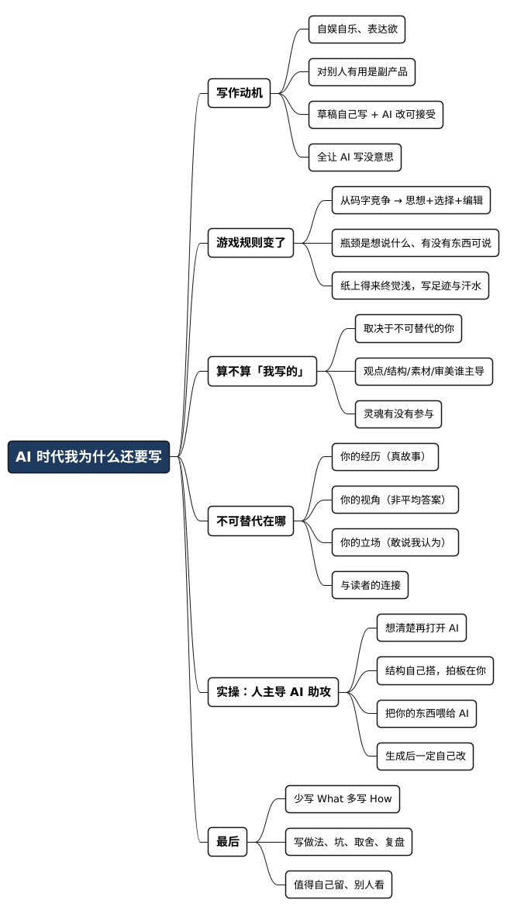

AI 时代，我为什么还要写作
Posted on 四 12 2月 2026 in AI
| Abstract | AI 时代，我为什么还要写作 |
|---|---|
| Authors | Walter Fan |
| Category | learning note |
| Version | v1.0 |
| Updated | 2026-02-12 |
| License | CC-BY-NC-ND 4.0 |
AI 时代，我为什么还要写作
我以前做过两年文字秘书，那两年最大的副作用，就是把“写下来”变成了习惯：周记、总结、会议纪要、技术笔记……写着写着，写作就像刷牙一样，哪天不写点东西，总觉得少了点什么。
可到了 AI 时代，写技术博客这件事忽然变得没意思了, 甚至感觉有点无聊了。
你辛辛苦苦写半天：背景、问题、排查、方案、代码片段、结论与反思……结果读者一问 AI，回答比你更快、更全、更像教科书。那一瞬间真有点泄气：写它干嘛呢？像在重复造轮子，而且轮子还没别人圆。
那干脆让 AI 写？当然快。但快到最后，反而更浪费——快是快了，可那篇文章和你没什么关系。就像把健身交给跑步机：步数涨了，心肺没练到。
我也试过“AI 写博客写得不亦乐乎”的阶段。写作效率确实上去了，文章也更顺、更像样。但最近又有点兴趣索然：写来写去，写不过 AI；发来发去，也不太像我。久了就会怀疑——我到底还写不写？写给谁？写了有啥用？
想了一圈，答案反而简单了：
- 写作首先是自娱自乐：我需要表达，需要把脑子里打架的东西写出来，让它落地。
- 如果顺便对别人有用，那当然更好——但那是副产品，不是 KPI。
这么一想，“自己写草稿，让 AI 帮我改改”就很自然：它像个编辑、像个助手，帮我把话说清楚。但“全让 AI 来写”，即使再流畅，也不太像是我在说话——读起来顺，却没有那种“这是我亲手写下来的”踏实感。
写作的游戏规则确实变了
以前写东西是一件很“重”的事：一个字一个字敲，一句话一句话磨，三千字能耗掉一整个下午。文字的生产成本高，所以能写的人少，能写好的人更少。
现在你对 AI 说一句话，几秒钟三千字就出来了。文字的生产成本趋近于零。AI 正在让“码字”这件事不再稀缺——但这不一定是写作的终结，更像是写作换了赛道：
从“码字能力”竞争，变成“思想质量 + 选择能力 + 编辑能力”竞争。
瓶颈不再是产出速度，而是你想说什么、有没有东西可说。
道理其实也不复杂：纸上得来终觉浅，绝知此事要躬行。AI 能把“道理”讲得很漂亮，但你走过的路、踩过的坑、做过的取舍，它没有。把这些真实经历和感悟写下来，既是记录，也是复盘——以后走远了回头看，你还能看见自己一路的足迹和汗水。
AI 写的，算不算 "我写的" ？
我的看法是：取决于你投入了多少“不可替代的你”。
谁敲的键盘不重要，重要的是：方向盘在谁手上。我通常用这四个维度判断：
| 维度 | 像“我写的” | 更像“AI写的” |
|---|---|---|
| 观点 | 核心结论来自我自己 | 我只丢题目，让它自由发挥 |
| 结构 | 逻辑框架我定，AI补细节 | 结构由AI生成，我照单全收 |
| 素材 | 案例来自我的经历/项目/踩坑 | 例子来自网络通用素材 |
| 审美 | 我逐段删改、调语气、压废话 | 生成即发布，一字未改 |
如果核心论点、逻辑框架、案例都来自你的思考和经历，你只是让 AI 帮你扩写、润色、补足表达，那产出仍然是你的，AI 只是工具。好比导演不亲自扛摄像机，但没人说电影不是导演的作品。
反过来，如果你只说一句“帮我写一篇某某题目的文章”，观点、结构、素材全是 AI 的，那就算署你的名，也不是你在说话。
所以真正要问的不是“AI 有没有参与”，而是：
你的灵魂有没有参与。
我们不可替代的东西在哪
AI 可以写出正确、流畅的文字，但很难写出“有灵魂”的文字。你不可替代的部分，大概在这几块：
- 你的经历：你经历过的具体人和事（那些细节、情绪、后果）是独家的。真实故事，AI 编得出来，但“真”编不出来。
- 你的视角：同一个话题，你的背景、路径、知识组合会决定你的切入角度。AI 给的是平均答案，是互联网的最大公约数。
- 你的立场：AI 很擅长四平八稳、两边都不得罪；但好的写作往往需要你站出来说“我认为……”，带着一点偏见、一点锋芒。
- 你和读者的连接：读者追随的不只是文字，是文字背后的人。持续表达建立的信任感，AI 替不了。
所以，写技术博客“AI 一问就有”的时候，确实会让人觉得没意思；但写你自己的经历、感悟、立场的时候，AI 再能写，也写不出那个“你”。
这也解释了为什么：
- “自己写草稿 + AI 改”能接受（AI 是编辑）；
- “全让 AI 写”没意思（你成了转发机器）。
实操上可以怎么做
不必一刀切。我自己更偏向一个“人主导、AI助攻”的流程：
- 想清楚再打开 AI
先回答三个问题： - 我到底想说什么？
- 我为什么要说？
-
读者看完应该带走什么？
这一步别外包给 AI，否则它会给你一堆“正确但没个性”的话。 -
结构自己搭（先搭骨架再填肉）
标题、分段、每段一句话要点、结尾落点——你来定。AI 可以帮你头脑风暴，但拍板的是你。 -
把“你的东西”喂给 AI
你的经历、你的数据、你的金句、你的语气偏好，越具体越好。写作也是“垃圾进，垃圾出”。 -
生成之后一定要自己改
- 删掉 AI 味的表达（比如“值得注意的是”“总而言之”）
- 把句子改成你平常说话的节奏
- 检查每个观点是不是你真信的
- 大声读一遍：像不像你在说话？
一句话：
编辑的过程，就是把 AI 的文字变成你的文字的过程。
不编辑，只有“生成”，那写作就退化成复制粘贴。
最后一句
写作没有死，死的只是“没有灵魂的码字”。
AI 时代，如果你过去的价值只是“能写字”，那确实危险了——AI 写得比你快、比你多、比你不知疲倦。但如果你过去的价值是“有东西可写”——有经历、有观点、有立场——那 AI 更像给了你一副翅膀：让你少花时间在敲字上，多花时间在想清楚“我到底要对这个世界说什么”上。
那些无法被 AI 替代的，从来不在键盘上，而在你的脑子里、心里、和你走过的路里。
以后我还是会写，但会刻意少写 What，多写 How：大模型能答的就不劳我敲字了；我多写它答不了的——我的做法、我的坑、我的取舍、我的复盘。这样写出来的东西，才值得自己留，也值得别人看。
全文思维导图
@startmindmap
<style>
mindmapDiagram {
node {
BackgroundColor #F8F9FA
RoundCorner 10
Padding 10
FontSize 13
}
:depth(0) {
BackgroundColor #1E3A5F
FontColor white
FontSize 18
FontStyle bold
}
:depth(1) {
FontSize 15
FontStyle bold
}
:depth(2) {
FontSize 13
}
}
</style>
* AI 时代我为什么还要写
** 写作动机
*** 自娱自乐、表达欲
*** 对别人有用是副产品
*** 草稿自己写 + AI 改可接受
*** 全让 AI 写没意思
** 游戏规则变了
*** 从码字竞争 → 思想+选择+编辑
*** 瓶颈是想说什么、有没有东西可说
*** 纸上得来终觉浅，写足迹与汗水
** 算不算 "我写的"
*** 取决于不可替代的你
*** 观点/结构/素材/审美谁主导
*** 灵魂有没有参与
** 不可替代在哪
*** 你的经历（真故事）
*** 你的视角（非平均答案）
*** 你的立场（敢说我认为）
*** 与读者的连接
** 实操：人主导 AI 助攻
*** 想清楚再打开 AI
*** 结构自己搭，拍板在你
*** 把你的东西喂给 AI
*** 生成后一定自己改
** 最后
*** 少写 What 多写 How
*** 写做法、坑、取舍、复盘
*** 值得自己留、别人看
@endmindmap

本作品采用知识共享署名-非商业性使用-禁止演绎 4.0 国际许可协议进行许可。